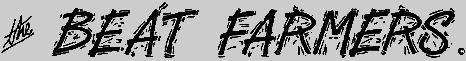
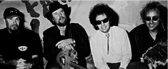

Check out a much better
Beat Farmers web site which inclues the following
Update from Chris Raney dated March 11 1997

OLD NEWS
Hubba, Hubba !
The Country Dick solo album "The Devil Lied To Me"
will be released by Bar None Records in late July.
Here are some
goodies from the press release.
Country Dick's artwork is on exhibit at the
Intersection Gallery in San Diego (off Park Blvd.) from 8/16 to 8/29
Awright !
Jerry Raney's new band name is "Power Thud".
They are playing San Diego at Winstons West 8/16 (Fri.)
Raney Blue played some of the following California shows:
- Friday, May 3 at the Belly Up, San Diego
- Friday, May 17 at Winstons East, Lakeside (San Diego)
- Saturday, May 25 at the Coach House, S.J. Capistrano
- Sunday, June 9 at Brick By Brick (opening for Dash Rip Rock) San Diego
- Friday, June 22 at Winstons East, Lakeside (San Diego)
- Saturday, June 29 at the OB Street Fair (San Diego?)
God is here tonight !
Well, at least on Friday, May 10th Joey Harris will be playing with
Mojo Nixon
and Nick Reynolds of the Kingston Trio at the Baja Brewing Co.
(ph. 619-231-9279) in downtown San Diego at 9pm. Check out the new
"Mojoworld" Page!
Hey ! Camille sent me some
digitized photos of the Beat Farmers
that she took. Thanks, Camille !
Whoa ! There's now an official
Beat Farmer's WWW page !
They even have a couple of Beat Farmer's Almanacs :
Check out the
Beat Farmer FAQ or the alternate (older)
Beat Farmer FAQ !
Read a sterling
Review of the latest album, Manifold.
OLDER NEWS
The following was culled from rec.music.misc where it had been
copied and posted by Ken Drew (kenneth.drew.3@nd.edu). It was later
HTML-ized by Ron Record
(rr@ronrecord.com).
If anyone has any images of The Beat Farmers, i
would appreciate hearing about them.
Bio compiled by word-guru,
Country Dick Montana (copied by Ken Drew)
The Beat Farmers are, without question, today's most durable legends of
marginally popular music.
"Never heard of 'em!", Ya' say? Well, that ain't the Beat Farmers fault,
for in the course of their eleven year existence they have:
- Released 6 gem packed albums on Rhino and Curb labels, powered by the
world renowned spottiness of MCA distribution.
- Toured Europe 5 times
- Seen every square inch of the USA and Canada fifteen hundred thousand
times.
- Appeared on "Entertainment Tonight" and made David Letterman an honorary
rodie
- Fathered at least 3 children
- Had tens of dozens of rave reviews heaped upon them, like these:
- Billboard:"The Beat Farmers may be the best rock-country-blues
band to come down the pike since Credence Clearwater Revival"
- Houston Chronicle: "A great show, possibly the hottest flat-out
rock 'n roll I've ever been privileged to witness"
- Village Voice: "What elevates the Beat Farmers above the
competition is not only their masterly mix of influences, but the way in
which these sources serve as launching pads for their rocket-blast excursion,
that make you want to dance, cry, and laugh."
- Cashbox: "The Beat Farmers are first rate, pure
entertainment."
- Vancouver Sun: "Amazing, magical, unbelievable- no
superlative is too great for the wild, wild show the Beat Farmers put on
last night. They twanged, they rocked, they soared, and in the end, they
had a jam packed house screaming for 'more, more, more!"
- BAM Magazine: "The Beat Farmers are bizarre, crude, and defy
any rational description, yet above all, they're one hell of a band."
- Melody Maker: "The Beat Farmers present a great, sweeping
panorama of styles and accents, riffs and rifts, all welded together with a
unique and considerable force. They can sound like every great band you've
ever loved, but no one has ever sounded like the Beat Farmers. They are a
legend in the making and the making of a legend"
Beat Farmer Factoids
- The Farmers have led their zealous "secret society" legions in setting
more house bar records than any act in history (most likely- hard to
document this stuff!)
- They've been arrested, burglarized, stiffed, beat-up, shot at, carved-up,
censored, married, divorced, and forced to share dressing rooms with "The
Village People", "Chippendales", "Larry 'Bud' Melman" and that idiot lead
singer for Duran Duran.
- They've sur-thrived four years with no new "product"
- Recorded their long-awaited latest, Viking Lullabys, in Vancouver,
unmolested and free from any industry input what-so-ever.
Viking Lullabys
Viking Lullabys contains 13 new originals with occasional assistance from
longtime collaborators Mojo Nixon, Paul Kamnaski, and former Farmer Buddy
Blue.
Viking Lullabys is already being hailed as the finest Beat Farmer effort to
date.
All hail the King of loser-friendly flop-house rock!
The popes of stool pigeon bop!
Hail those gorgeous tits for tots-
THE BEAT FARMERS!!
Available July 26 at fine record stores. Viking Lullabys is on Sector 2
Records, Houston, Texas
MANIFOLD
Hey, they've released another album called "Manifold". Check out the
Press Release.
This page created and maintained by
Ron Record (rr@ronrecord.com)
{kind=link}